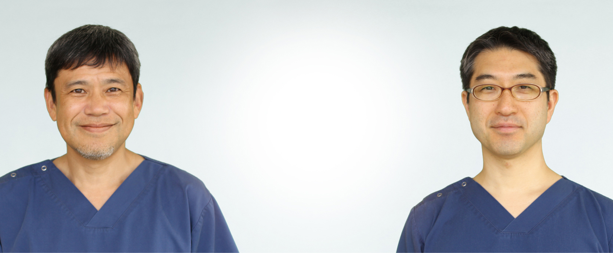
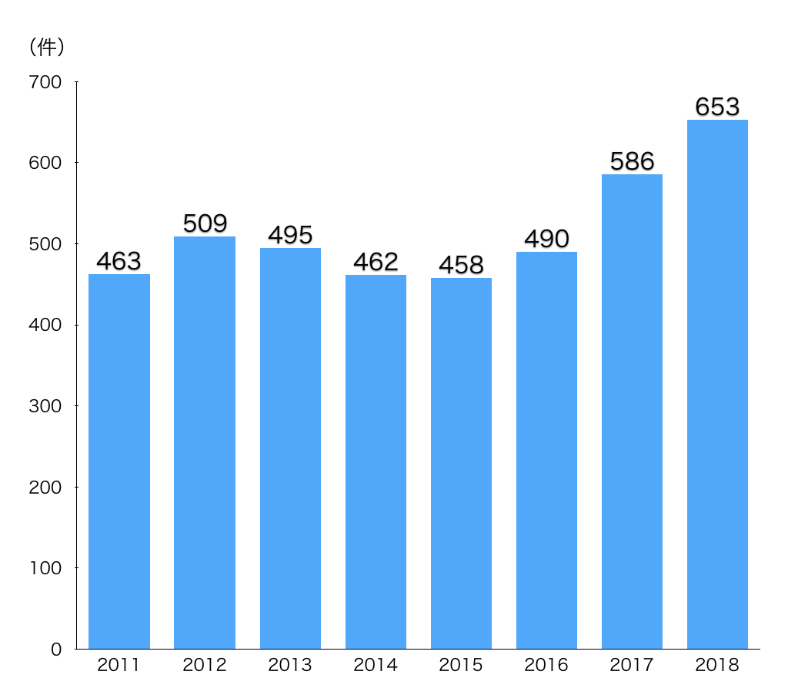
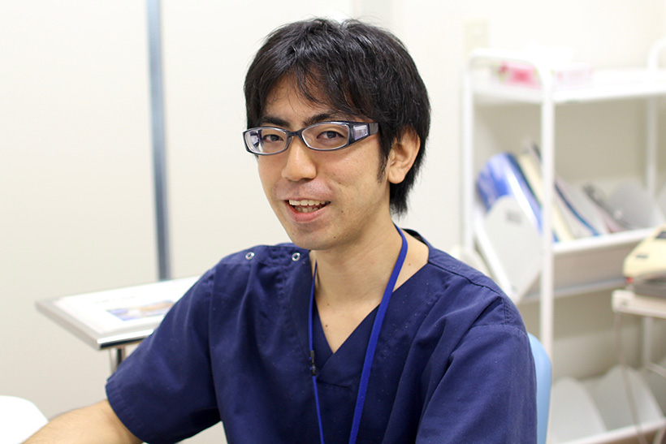

心臓血管麻酔の
エキスパートへ
経験豊富な講師陣が熱血指導！
角本 眞一 ： 日本心臓血管麻酔学会 心臓血管麻酔専門医
栗林 淳也 ： 周術期経食道心エコー 認定医（JB-POT）
JB-POT、心臓血管麻酔専門医試験の合格に向けたサポート体制!
- 蓄積された合格ノウハウ
- 豊富な心臓麻酔症例
- カンファレンスで
受験対策をバックアップ
- 医師間での情報共有
- 3Dに対応した最新心エコー
- 先天性疾患にも
地域連携で対応
- 各種ガイドラインを
online購読
- ほぼすべての
教科書を閲覧可能
■ JB-POTの合格状況
| 年 |
受験者数 |
合格者数 |
不合格者数 |
合格率 |
| 2009年 |
1 |
1 |
0 |
100% |
| 2010年 |
3 |
2 |
1※ |
67% |
| 2011年 |
2 |
2 |
0 |
100% |
| 2012年 |
3 |
2 |
1 |
67% |
| 2013年 |
0 |
0 |
0 |
- |
| 2014年 |
1 |
1 |
0 |
100% |
| 2015年 |
1 |
1 |
0 |
100% |
| 2016年 |
2 |
1 |
1 |
50% |
| 2017年 |
5 |
3 |
2 |
60% |
| 2018年 |
4 |
4 |
0 |
100% |
※翌年再受験し合格
■ 心臓麻酔症例数

■ 麻酔科専門医研修プログラム

2017年 心臓血管麻酔専門医試験合格体験記
ガイドラインと専門医コースレクチャー過去4年分と格闘。
部長栗林淳也
2017年11月に行われた心臓血管麻酔専門医試験に合格しました。まず、申請に関して2つの事項が懸念材料としてありましたが、結果的にはいずれも解決できました。ひとつは先天性心疾患の経験症例数です。当院は成人の心臓外科を行っている病院ですが、成人先天性心疾患の症例を優先的に担当させてもらい、10例以上を経験することができました。もう一つは学会参加証をいくつか紛失してしまったことです。これも学会ホームページのFAQに書いてある通り、マイページの参加記録で代用することができ事なきを得ました。
実際の勉強についてはすでにこの試験に合格していた当院の角本先生、溝部先生と以前当院で心臓麻酔を研鑽された坂本先生（現昭和大学横浜市北部病院 医局長）の意見を参考にさせていただきました。ガイドラインの重要性は強調されていたので、とりあえず夏頃から読んでみましたが、英文論文投稿と査読者への回答を同時に抱えていたのでペースは上がりませんでした。今から考えるとストラテジー上の問題点があるように思います。まず、膨大な量のガイドラインの全容を把握すべきでした。これにはすべてのガイドラインをプリントアウトして積んでみるといいでしょう。分厚さに圧倒され、危機感から勉強のモチベーションになります（萎える方もいるかもしれませんが。）（写真）まんべんなく出題されているので、ガイドラインを読むコスパも考慮（短いガイドラインから順に読んでいく）すべきでしょう。ガイドラインを読まずにいかにガイドラインを把握するか（専門医コースレクチャーやTEE講習会などの活用）といった視点も必要だったと思います。結局2/3程のガイドラインを読んだところで時間切れとなり、専門医コースレクチャーを4年分程、直前に見直しました。ここからの出題は結構多かった印象があるので直前の分だけでなく、過去の分もできるだけ目を通しておいた方がよいでしょう。
角本先生の体験記にもあるように、受験に必要な書籍は麻酔科に揃っていたので大変助かりました。私のこの体験記がこれから受験される先生方の一助になれば幸いです。
2015年JB-POT合格体験記
小倉記念病院でしか学べないことが多く、すごく充実した日々。
兼村 大介


2014年麻酔科専門医試験、JP-POT合格体験記
専門医試験受験後１カ月で挑んだJB-POT!
岩本泰斗
小倉記念病院では平日はほぼ毎日心臓手術が行われており、そのほとんどで経食道心エコー（TEE）が使用されています。誰もが望めば、毎日でもTEEに触れられる環境にあります。そこで、それまでほとんどTEEの経験がなかった私としては、JB-POT認定試験を受けることがTEEの知識修得の近道だと考えました。
しかし、そのとき私は卒後７年目で、 麻酔科専門医認定試験を受験するタイミングでした。専門医試験の対策は妥協することができませんので、 TEEの学習は日々の診療で分からないことを調べたり他の先生方に教えていただいた程度にして、 本格的なJB-POT試験対策は専門医試験が終わった後から始めました。期間もわずか約１ヶ月間しかありませんでしたが、学習する生活習慣ができていたことと、栗林先生を初め、多くのJB-POTerやAdvanced PTEeXAM合格者の先生方にアドバイスしていただいたおかげで合格することができました。
試験対策に使用した書籍やその活用方法をPDFファイルにまとめました。
これからJB-POTを受験される先生方の参考になれば幸いです。
2013年 Advanced PTEeXAM 合格体験記
症例の経験を増やし、Diplomateを目指したい。
部長栗林 淳也
米国の経食道心エコーの試験である本試験の受験を考え始めたのは約2年半前、まだカナダに留学していた頃でした。当時の私は研究に悪戦苦闘しておりましたが、日本人の臨床留学されている先生とも交流がありました。その中には麻酔科の先生もいらして、その先生がこの試験に合格されていました。もし自分がその試験に合格すれば将来に繋がるかもしれない、そんなふうに漠然と思っていました。それから私も年を重ね、若い先生が海外に挑戦するのを応援したいと思いもまた近頃は高まってきました。この試験に合格すれば、そのノウハウを伝えていくことができるのではないか、そう考え受験を決意しました。そのような状況の中、昨年JB－POTの勉強を私と一緒にして合格した森先生がこの試験に興味を持ってくれて、今回も一緒に受験することになり、2人で合格することを目標にしました。
申し込みに際し、医師免許の英訳が必要なのですが、有効期限の記載がない場合は別途permanentの資格であることを証明する書類が必要であると申し込みの案内には書いてあったのですが、その書類の発行が締め切りに間に合いませんでした。結局、医師免許の英訳のみで申し込みましたが、後から追加で書類を要求されることはなく、無事受験することができました。
勉強は試験の1ヵ月半くらい前から始めました。JB-POTの勉強で基礎知識は既にあると判断し、問題集 ”Conquer the PTEeXAM” を解きました。英語対策は問題文の把握に集中し、解説で読んでも即座に意味が分からない時は迷わず、訳本「解きながらレベルアップ経食道心エコー問題集」で確認し時間を節約しました。”Conquer the PTEeXAM” には内容的に古くなっている問題（例えば16セグメントの問題など）があったり、新しく追加になった項目の問題がなかったので、2011年、当科在籍中にこの試験を受けて合格した先生のアドバイスで ”Clinical Manual and Review of Transesophageal Echocardiography, Second Edition” の章末問題を解きました。”Conquer the PTEeXAM”に含まれていない3DエコーやVADなどに関する問題があったので為になりましたが、難易度が高かったため、かなりの時間を要しました。本文は通読せず、問題に関する部分だけ拾い読みしました。このことは強調しておきたいのですが、インプットに関しては必ずしも英語でなくてもいいと思います。試験前に一通りJB-POTの講習会のDVDを見直しましたが知識の整理に非常に役に立ちました。英語の習熟度により勉強法が変わるのではないかという懸念がありましたが、基本的には私も森先生も同じように勉強を進めていきました。
実際の試験問題について詳しく述べることができませんが、素直に考えてよい問題が多かったです。しかし、必ずしもJB-POTより簡単という訳ではなかったように思います。動画問題も短期記憶を極限まで酷使するような問題はなく、かなりJB-POTとは傾向が異なっていました。
今回2人で合格することができ、自分自身のためになったのは勿論のこと、若い先生のに力になれたこと、試験対策のノウハウが得られたことは自分にとって大きな収穫でした。
実際の受験会場での細かい注意点などについては、例によって、週一回当科で行われているカンファレンスで発表させていただきました。
この試験は合格しただけだとTestamurというstatusですが、実際にエコー診断した症例リストなどを申請することにより、Diplomateというstatusになります。今後は実際の症例での経験を増やし、Diplomateを目指したいと思います。
2012年JB-POT合格体験記
日々の症例を大切に実践し自らも学ぶことに尽きる。
部長栗林 淳也
小倉記念病院麻酔科・集中治療部では若い先生方から先輩の先生方までJB-POTを持っている先生がいましたので自然の流れで受験をすることになりました。私は今年で卒後14年目という中堅に差し掛かっている学年ということもあり、今回はただ自分が合格するだけではなく、今年受験する全員が合格することを目標としました。受験者の中には麻酔科専門医試験とのＷ受験の先生もいたので、知識をいかに効率よく習得していけるかという点において情報を共有することに重点を置きました。具体的には勉強する本などの優先付けをしたり、お互いに問題を出し合ったり、数値を覚えるために作った語呂合わせを共有したりしました。そんなJB-POT受験組の雰囲気がよかったのか、途中から心臓血管麻酔専門医を受験する角本先生もこの輪に加わり、楽しい環境で勉強できました。一方で、自分がJB-POT受験組を引っ張っていくような振る舞いをしていながら自分だけ不合格だったらどうしようという不安もありました。
今回、私自身は試験には合格しましたが、残念ながら合格率67％ということで、全員で合格という目標は果たせませんでした。合格へのノウハウもまだまだ改善の余地があるということでしょう。実際受験してみないと分からないことも多々あり、その点については毎週恒例のカンファレンスで、発表させていただきました。次回の試験では受験生をサポートするという立場で関わっていきたいと思います。試験に合格したとはいえ自分の経食道心エコーのスキルはまだまだスタート地点に立ったようなものなので日々の臨床でのスキル向上に努めていくと同時にその体系化に力を注ぎたいと考えています。
TEEの勉強で、心臓麻酔への理解が深まった。
森 悠
2012年11月11日に行われたJB-POTを受験しました。当院にはJB-POTを持っている先生方が多数おられ、心臓麻酔を学び始めるにあたりTEEの勉強も同時にすると理解が広がると勧めていただき受験することを決めました。最初は心臓麻酔もまだ習い始めたばっかりなのに大丈夫かなと不安もありましたが、過去にJB-POTを受けられた先生に勉強方法やどういう所が大切かを教えていただき、一緒に受験する先生方にはわからないところを聞きつつ息抜きをしたり、和気藹々とした雰囲気で勉強を進めることができました。
今回、受験するためにTEEを勉強したことにより、心臓麻酔への理解が深まったと思います。
第1回心臓血管麻酔専門医試験合格体験記
日常の臨床の中でのあやふやな知識を調べ直す。
部長角本 眞一
2012年11月10日に行われた「第1回心臓血管麻酔専門医試験」を受験しました。試験の形式としてはJB-POTでもお馴染みのCBTによるマルチプルチョイス方式で（私のJB-POT受験時は、まだマークシートでした）５つの選択肢の中から正しいもの、あるいは誤っているものを１つ、あるいは２つ選択するもので完全正解のみが得点されるというものです。問題の内容としては、解剖、生理の基礎内容から心臓麻酔の臨床問題にわたるまで実に広範囲に網羅されたもので、受験資格がJB-POT合格者であることを前提としておりTEEに関する項目は、ほぼありませんでした。一言で印象を述べれば、かなり難しいが確かに心臓麻酔の専門医として知っておいてよい事柄だというものでした。試験問題は80問を120分間で行うもので、私は受験終了後、記憶の新しいうちに可能な限り思い出せる範囲で試験内容を再現し不完全ながら75問の問題を記録し当院の後に受験する方々への参考に保存しました。
その内容の中から頻出されたものとしては
(１) 専門医コースレクチャー（日本心臓血管麻酔学会主催） (２) ガイドライン（受験者への参考図書として試験委員が提示） (３) 止血凝固
(４) モニターや検査 (５) 機械的補助（IABP,LVAD） (６) 先天性心疾患 (７) 人工心肺などの項目でした。
特に、最初にあげた (１) 専門医コースレクチャーは過去３年間に心臓血管麻酔学会で行われた内容と、2012年の講義で示されたなかに問題の鍵となる項目に触れられた部分がかなりあったこと、さらに、 (２) ガイドラインに関しては「非心臓手術患者の心血管系評価ガイドライン」に関する問題が多かった印象と、その他に提示されていたガイドラインも全て問題に組み込まれていた印象でした。 (７) 人工心肺に関しては、人工心肺の基本的な構造に関するものや、トラブルに関するものが問われており、試験委員の提示しているGraveleeの代表的な教科書もいいのですが、「人工心肺トラブルシューティング（安達秀雄、百瀬直樹著、中外医学）」の一読もお勧めしますし、また心臓血管麻酔学会の主催するCPBハンズオンや講義も参考になると思います。細かな点に触れると切りがありませんが、結局は日常の臨床の中でのあやふやな知識を調べ直しておく、日々の症例を大切に実践し自らも学ぶことに尽きるようにも思えました。
当院の受験環境に触れると、ほぼ毎日開心術２〜３例があり、毎朝その日の症例を前日の総合術前診察医がチェックした上で、当日、担当麻酔科医がプレゼンテーションを行い、さらに前日の症例の麻酔手術経過を報告し討論する場があります。自らの経験症例だけではなく多くの症例を学ぶことが可能です。さらに、週１回金曜日の朝にはカンファレンス（抄読会）を開いており、文献の紹介から先に述べたガイドラインの紹介など、様々な知識を得ることが可能だと思います。現在、当院では成人症例のみしか扱っておらず先天性心疾患に触れる機会が少ないのは確かに欠点ですが、必須経験症例数を満たすだけならばASD、VSDの成人例で登録可能ですし、過去の実績として近隣小児病院（福岡市立こども病院など）に週１日研修に送るなど、対応してきました（私自身は20年以上前の小児心臓麻酔の経験だけでしたが、専門医試験の (６) 先天性心疾患の問題は十分対応可能なものでした）。また、先にも挙げた試験委員から提示されている各種ガイドラインは当院が循環器および麻酔関連のかなりの雑誌のonline購読（当院職員はdownload無料）の契約をしているため容易にPDFとして取り出せますし、教科書についても麻酔科の予算で、ほぼ全て購入済みで、それに私が受験に際して使用したboard reviewの問題集なども寄贈しています。今年度も心臓血管麻酔専門医を受験するという当院出身者の連絡も既に受けており今後も当院出身の専門医が続々と生まれていくものと期待しています。将来的に専門医取得に興味を持たれている先生方には十分な環境を提供できるものと自負しています。